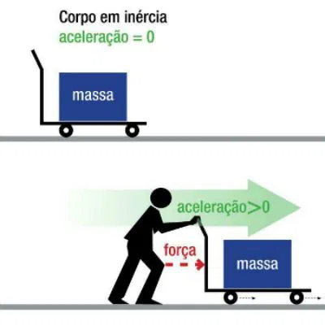

Segunda Lei de Newton
A Segunda Lei de Newton, ou Princípio Fundamental da Dinâmica, estabelece que a força resultante aplicada sobre um corpo é igual ao produto de sua massa pela aceleração: F = m × a.
F = m × a
Onde:
F = Força resultante (N ou dinas)
m = Massa (kg ou g)
a = Aceleração (m/s² ou cm/s²)


Como usar a calculadora?
- Selecione o que deseja calcular (Força, Massa ou Aceleração)
- Preencha os campos disponíveis com os valores conhecidos
- Ative o atrito se necessário e preencha os campos extras
- Selecione a unidade de medida desejada
- Clique em "Calcular" para obter o resultado
Exemplos Práticos
Carro acelerando
Um carro de 1000 kg acelera a 2 m/s². Qual a força necessária?
Empurrando uma caixa
Uma caixa de 50 kg é empurrada com força de 100 N. Qual sua aceleração?
Bloco com atrito
Um bloco de 10 kg com μ=0.2 sofre ação de força normal de 98 N. Qual força para a=1 m/s²?
kg
m/s²
N